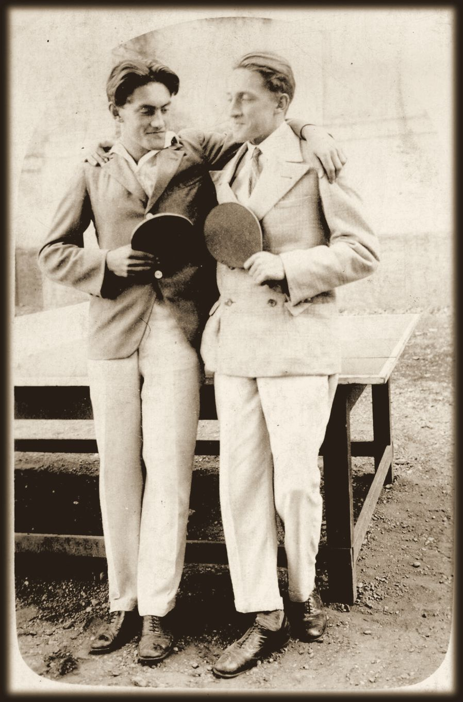

Dobrodošli
Namizni tenis, znanost in zgodovina
Na tej strani zbiram svoje knjige, znanstvene objave in zapise o zgodovini slovenskega namiznega tenisa.

Dobrodošli
Na tej strani zbiram svoje knjige, znanstvene objave in zapise o zgodovini slovenskega namiznega tenisa.
Rodil sem se leta 1960 v Murski Soboti. Sem redni profesor na Fakulteti za šport Univerze v Ljubljani.